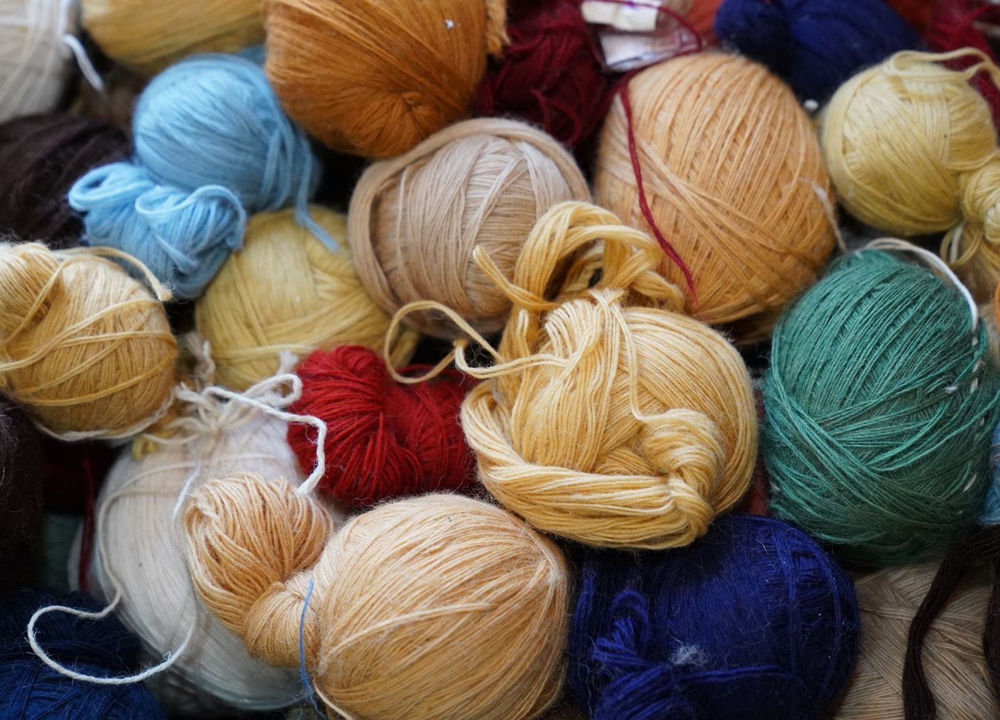
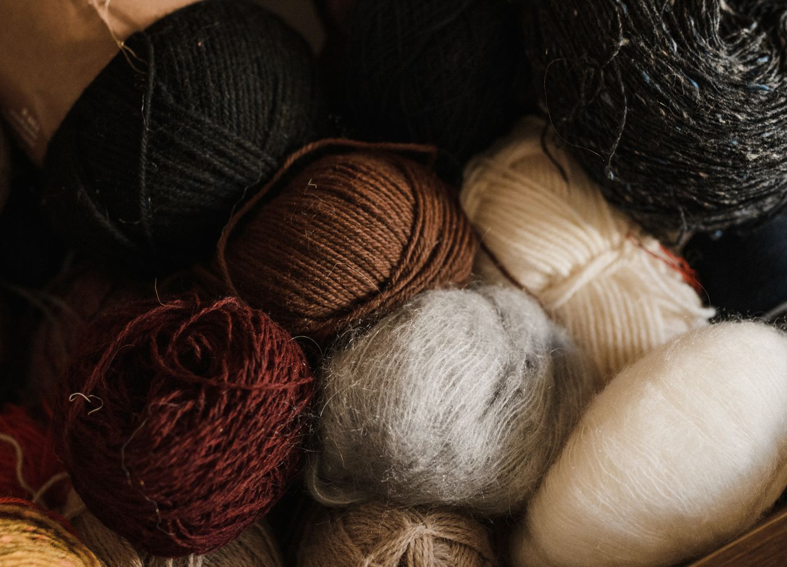
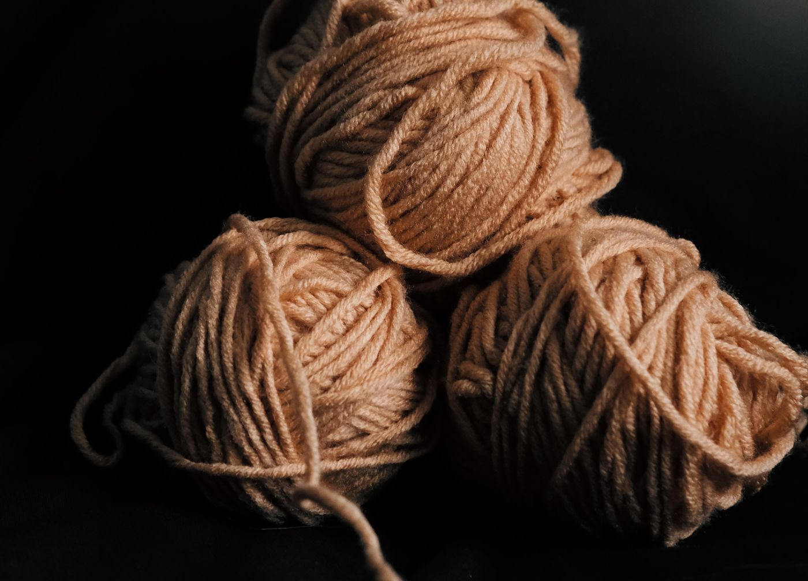
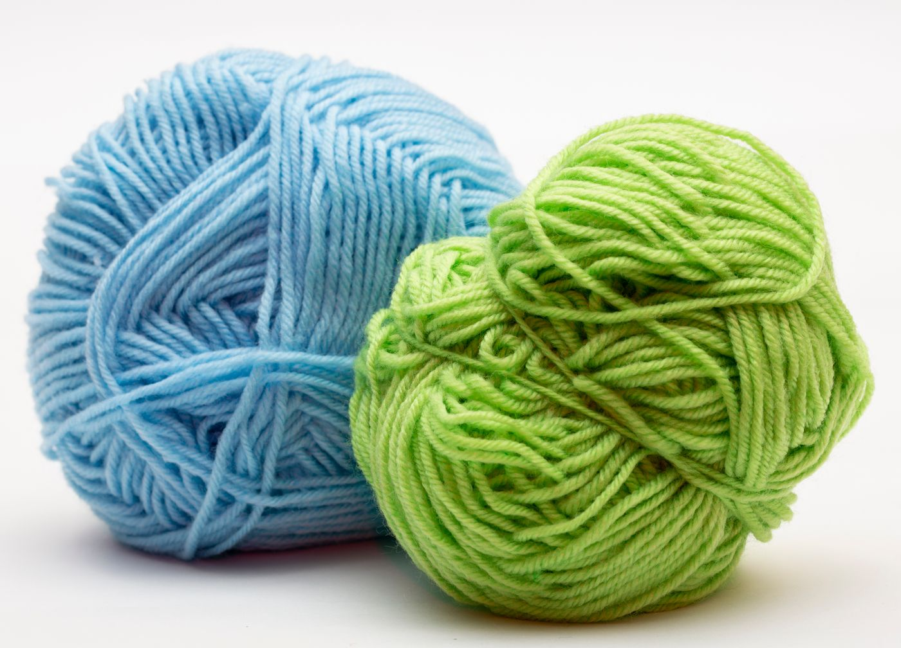

Yarn & Fiber
Cotton Dishcloth Yarn Sampler, Eight Balls
Beginner- tomato
- corn
- sage
- slate
- lilac
- teal
- rust
- cream
$32.00
Shipping is a flat $5.95. Free standard shipping on US orders over $45. Sales tax is calculated at checkout where applicable.
Eight 50-gram balls of mercerised cotton in eight colours — the practice yarn.
Returnable within 30 days of delivery only if the yarn or fabric is unused, uncut and still in its original band or fold. See Returns & Refunds.
About this one
Cotton dishcloth yarn is what almost everybody learns on, and for good reason. It does not split, it does not felt, the stitches sit where you put them so you can see what you did wrong, and if the result is a disaster it is still a perfectly good dishcloth.
Eight 50-gram balls in eight different colours, 95 yards each, 760 yards altogether. That is roughly sixteen standard 9-inch dishcloths, or a good deal of swatching and unravelling before you commit to anything expensive.
The cotton is mercerised, which is a caustic treatment that makes the fibre stronger, smoother and more colourfast. In practice that means it takes hot washing repeatedly without the colour running into the rest of the load.
Worsted weight, so it works on the same needles and hooks as most of the wool on this site.
Specification
Category
Yarn & Fiber
Skill level
Beginner
Materials
100% mercerised cotton, worsted weight (Craft Yarn Council category 4). Eight solid colours.
Size and weight
Eight 50 g balls, 95 yd each. 760 yd total. Pack weight 0.9 lb. Band gauge 18 sts × 24 rows to 4 in on US 7 (4.5 mm).
Colours
Eight solid colours, one ball each.
Best for
Learning, swatching, dishcloths and washcloths.
In the box
- Eight 50 g balls in eight colours
- Printed 9-inch dishcloth pattern card
Care
- Machine wash hot. Mercerised cotton is colourfast and takes it.
- Tumble dry low. Expect a small amount of shrinkage on the first wash.
- Warm iron if you want a flat finish.
- Cotton has no memory, so a finished cloth will not spring back into shape the way wool does.
Shipping
Ships within 1 to 2 business days from Lancaster, PA.
Returns
Returnable within 30 days of delivery only if the yarn or fabric is unused, uncut and still in its original band or fold. See Returns & Refunds.
More from this shelf
-

Yarn & Fiber
Merino Worsted Yarn Bundle, Five Skeins
- deep red
- slate blue
- sage
- amber
- plum
Five 100-gram skeins of superwash merino in one dye lot, enough for a full-size throw.
$58.00Free shipping over $45
-

Yarn & Fiber
Heathered Wool Yarn, Three Balls
- oatmeal heather
Three 100-gram balls of a heathered oatmeal wool blend, aran weight, one dye lot.
$34.00Free shipping over $45
-

Yarn & Fiber
Blue & Green Sock Yarn, Two Skeins
- harbour blue
- fern green
Two 100-gram skeins of fingering-weight sock yarn, one blue and one green, with nylon.
$36.00Free shipping over $45